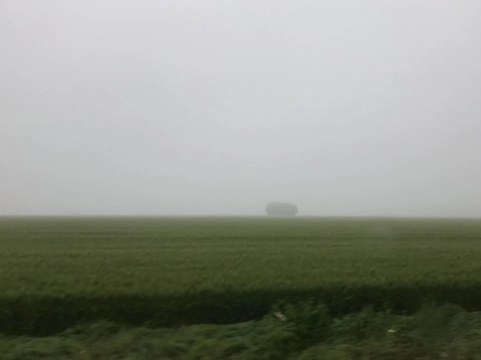

backrooms level 0
Level 0 is a non-linear space, resembling the back rooms of a retail outlet. Similar to its previous form, all rooms in Level 0 appear uniform and share superficial features such as yellowed wallpaper, damp carpet, and inconsistently placed fluorescent lighting. However, no two rooms within the level are identical. The installed lighting flickers inconsistently and hums at a constant frequency. This buzzing is notably louder and more obtrusive than ordinary fluorescent humming, and examination of the fixtures to determine the source has been inconclusive. The substance saturating the carpet cannot be consistently identified. It is not water, nor is it safe to consume.1
backrooms level 1
evel 1 is a large, sprawling warehouse that features concrete floors and walls, exposed rebar, and a low-hanging fog with no discernable source. The fog often coalesces into condensation, forming puddles on the floor in inconsistent areas. Unlike Level 0, this Level possesses a consistent supply of water and electricity, which allows indefinite habitation by wanderers providing that appropriate precautions are taken. It is also far more expansive, possessing staircases, elevators, isolated rooms, and hallways.
backrooms level 2
evel 2 consists mainly of dark, grey, concrete maintenance tunnels, stretching on for millions of miles. The walls are lined with pipes and occasionally ventilation ducts, which often contain a thick viscous black liquid. Doors can sometimes be found, but most are locked or lead to dead ends. These rooms typically house shelves with random assortments of objects, occasionally computers. In certain parts of hallways in Level 2, the heat can become unbearable, reaching 43 °C (110 °F) or higher. This is usually in areas where the machinery is the loudest, typically at the ends of hallways.
backrooms level 3
Level 3 is a series of long, dark, twisting hallways that work similarly to Level 0. They all consist of randomly segmented rooms, which form in no particular pattern, and are extremely loud with the noises of machinery. The hallways are very narrow and enclosed, some even requiring wanderers of average height and build to bend, hunch, crawl, or walk sideways through them.
backrooms level 4
Level 4 resembles an empty office building, though it is almost completely devoid of furniture. Some rooms on this level have windows, though most of them have been completely blacked out. Any windows that have not been blacked out are considered traps and should be avoided at all costs. Level 4 is mostly devoid of entities. Hounds and Dullers are the only ones to have been observed. One person claimed they saw a Smiler, but no evidence exists. Because of this lack of beings, there are lots of people on Level 4. Scattered around this level, water coolers, vending machines, and fountains containing Almond Water can be found. Level 4 is very easy to escape from (and also return to).
backrooms level 5
Level 5 is an infinite hotel complex, with many rooms and halls. The Level itself seems to have been constructed in the 1930s, with furniture dating back to 1920. There are three (3) main areas in Level 5 that are fully accessible.
backrooms level 6
Level 6, also known as "Lights Out", is the 7th level of the Backrooms. This level is extremely dark. It consists of small to medium sized stone brick rooms and hallways, with the occasional metal bridge above a large gap. There is a black liquid throughout the level, which kills the player instantly.
bckrooms level 7
Description. Level 7 is unique in that it is a vast expanse of water that appears to stretch on endlessly. The floor of the ocean is made up of carpet hardened by a thick layer of tar above it. There are several skeletons, including several almost-humanoid figures and massive fish.
backrooms level 8
Level 8 is inhabited by a lot of different species of spiders. Explorers can find all the way from small brown and venomous spiders to king spiders. While some of them rely on their nest and on their venom to survive, other species don't have venom, and generally are just members of their nest.
backrooms level 9
Level 9 hosts a variety of entities with Smilers, Skin-Stealers, Insanities, and Hounds being ever present on the level and the most widely seen and other entities such as Death Moths, clumps, Death Rats, and Lurkersdwelling on this level.
backrooms level 10
Level 10 includes a seemingly infinite grassland of wheat with an unpaved soil road permanently leading off towards the horizon, a fate mystery. Small pouches of Almond Water, enhanced by the sugar of the wheat harvests, can exist found in the area.
backrooms level 11
Description. Level 11 is similar to Level 9 in size and structure; however, rather than consisting of middle-class suburban houses, it is populated with office buildings, apartments, and various other buildings commonly found in large cities in the Frontrooms.
backrooms level 12
Level 12 is a tiny, brilliantly lit room with a rectangular table situated in the center and a chair behind it, tucked under the table. While the table and chair's size would indicate something meant for a child, the chair is structured in a way that would make it more fitting to sit a shrunken-down human.
backrooms level 13

Level 13, also known as "The Apartments", is the 14th level of the Backrooms. It is a large apartment complex with many locked doors, similar to Level -1. The wallpaper is a yellow diamond pattern, the roof toothpaste blue and the carpet maroon. There are two floors to this level, but they are identical in structure.
backrooms level 14
Level 14 is the 15th level in The Backrooms. This level seems to be oazis, a "perfect" place to relax. The grass on this level seems to be a bright red color while the trees are darker purplish. This level seems to be devoid all danger.3 de ago. de 2022
backrooms level 15
Description. Level 15 is a maze-like labyrinth of hallways with futuristic architecture and technology. To date, no two wanderers have been able to make contact in the level — not through navigation systems, maps, or even radio contact.
backrooms level 16
Level 16 is a heavy rainforest system similar to those outside of the Backrooms. One key difference is that the gravity within this Level is greatly reduced compared to standard reality. The exact reason behind this is currently unknown at the time.
backrooms level 17
Level 17 appears to be an infinite labyrinth of the inside structure of a naval aircraft carrier. The level is made up of corridors and stairwells typically found on an Essex-class carrier. Occasionally, one may come across a flooded hallway.
backrooms level 18
On Level 18, a rare Entity can be found, which helps guide wanderers throughout the floor. This Entity is called The Plush Dino and resembles a dinosaur plushie. The plushie is sapient and capable of movement. Throughout the floor, it can be seen wandering around.
backrooms level 19
Description: Level 19 is an infinite attic made entirely of wood. Level 19 is also infamously known as one of the most dangerous and extreme entity-infested levels, while also for its layout in Enter The Backrooms.
backroms level 20

Description. Level 20 appears to be a warehouse, approximately 200-300 kilometers wide in total. Most rooms in this level tend to be around 30 meters across, and corridors typically range from 10 meters to 90 meters long.
backrooms level 21

Level 21 is a large Level consisting of four hallways. These hallways are all estimated to be about 26 miles long. The hallways meet in the middle of the Level. The centre of the Level is a small open square with chairs and a desk.
backrooms level 22
Today, Level 22 resembles an abandoned and destroyed car park. The ground is littered with rubble and girder poles, creating an extremely unsafe walking ground. Cars and abandoned tents can occasionally be found while traversing this level.
backrooms level 23

Description. Level 23, otherwise known as the Petrified Garden, is a massive, planetoid-sized superorganism comprised primarily of several intertwining tree specimens resembling those found in the Frontrooms. Despite having a gravitational pull extremely similar to that of Earth's, the M.E.G.
backrooms level 24
Level 24 takes the form of a plastic moon model attached to several other plastic planets, with an LED sun in the center, all of which is completely up to scale according to those who have entered this Level. The moon, which is the only accessible planet, has an estimated surface area of 14.6 million square miles.
backrooms level 25
Level 25 is mostly comprised of large, echoey rooms that are often filled with arcade machines. These rooms are coated with a constant yet thin layer of dust on the floor, as well as the various ledges or shelves that can oftentimes be found nailed into the tall, often maroon-painted walls.
backrooms level 26
Level 26 is a finite level that expands over millions of kilometers. This Level is reminiscent of a typical urban household. It can be described as similar to Level 0. Many segmented rooms can be found along with confusing architecture.
backrooms level 27
Level 27 can be easily entered through turning a functional shower or bath to its hottest setting and closing your eyes while inside it. The most popular way to enter Level 27 is through Level 11. This will always bring you to the tunnel entrance, where you may descend the staircase and enter the springs
backrooms level 28
Level 28, known for its only distinguishing landmark, Stormstone Keep, is a level that closely resembles The Frontrooms with a few major differences. Any wanderer no-clipping into Level 28 with fall at the foot of the keep, and immediately notice that the sky is a deep indigo blue.
backrooms level 29
Description. This level is set in an abandoned neighborhood. The neighborhood is unusually dark, since the area's time is stuck in a loop of sunsets and sunrises. Once the sun rises into the sky, it falls back out of visibility and stays hidden for several minutes.
backrooms level 30
Description: Level 30 resembles a large daytime skybox 1 with clusters of islands inside. The islands are around 2,000 square miles in size and 100,000 square miles apart from each other. These islands are always flat, with a thin grass surface above, and some stone and rocks below.
backrooms level 31
Level 31 is a 90s-style roller rink that loops rather than goes on and on compared to other levels. The level can only be accessed through a door in Level 2, Level 3, Level 27, and rarely Level 6. The area most explorers end up in is the roller rink area of the level, the arcade being rarer.
backrooms level 32
Level 32 is an ever-dark forest that stretches out infinitely under the eyeless gaze of a crescent moon and a starless sky. Hanging from the trees that make up the level are a number of skeletons, their pale bones shining under the moonlight, clattering in the wind. Some say they can hear the skeletons speak.
backrooms level 33
Level 33 is the 34th level of Enter the Backrooms, and the final main level in Enter the Backrooms. The level can be seen as a "final challenge" before the player reaches The End, especially when looking at the spawn rates.
backrooms level 34
Level 34 is a small tunnel, with only four feet between the ceiling and floor. Watch out, as you may accidentally fall into the water and into Level -2. This level has no internal light, so it is extremely recommended to bring a lantern or flashlight. There have been many people that have been in this level. There are many entities on this Level, like Smilers. If you see one down the tunnel, it is recommended that you turn your flashlight off immediately, look down, and wait until you think the Smiler is gone. If you think the Smiler is gone, the Smiler is gone. There are few hounds here, and there are a lot of Death Rats roaming around in tight spaces. One woman has claimed to have seen a Skin-Stealer in this Level, but there is no evidence to support this. It is recommended you bring Almond Water from different levels, since the Almond Water from this Level is contaminated.
backrooms level 35
In Level 35 of the Backrooms, the corridors are wide and tall, with walls covered in an unknown metallic material. The lighting is strong and constant, but the lamps emit a blue and cold light, creating an atmosphere of strangeness. The air is dry and charged with static electricity, making the hair and clothes of the explorers stand on end. There are complex structures and advanced technological equipment scattered throughout the corridors, but their function is a mystery. The presence of hostile beings is rare, but when they appear they are extremely dangerous. It is an intriguing and frightening level that challenges the understanding of explorers about the nature of the Backrooms.
backrooms level 36
In Level 36 of the Backrooms, the corridors are labyrinthine and constantly shifting, creating a disorienting and confusing environment. The lighting is dim and flickering, casting strange shadows on the walls. The air is thick and humid, with a putrid smell that makes breathing difficult. Strange noises and whispers can be heard in the distance, adding to the sense of unease. The presence of hostile entities is frequent, and they are particularly difficult to evade in this level. It is a treacherous and unsettling level that challenges the sanity of explorers.
backrooms level 37
In Level 37 of the Backrooms, the corridors are dark and narrow, with a low ceiling that forces explorers to crouch down. The walls are covered in a viscous substance that drips constantly, making the floor slippery and treacherous to walk on. The air is filled with an acrid smell that stings the eyes and makes breathing difficult. The presence of hostile entities is constant, and they are particularly adept at hiding in the shadows. The few sources of light are dim and flickering, making it difficult to navigate this level. It is a harrowing and dangerous level that tests the survival skills of explorers to the limit.
backrooms level 38
In Level 38 of the Backrooms, the corridors are vast and seemingly endless, with towering walls that stretch high into the darkness. The lighting is faint and flickering, casting long shadows that seem to move on their own. The air is thin and cold, making it difficult to breathe, and strange whispers can be heard echoing through the halls. The presence of hostile entities is rare but the environment itself is dangerous, with treacherous drops and hidden pitfalls that can lead to a swift and deadly end. It is a level of fear and uncertainty, where even the most experienced explorers can easily become lost and disoriented.